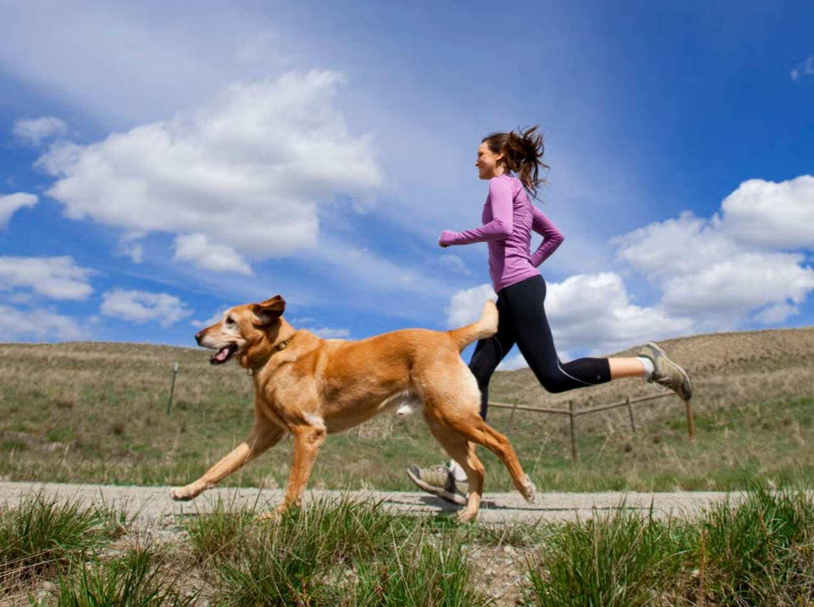
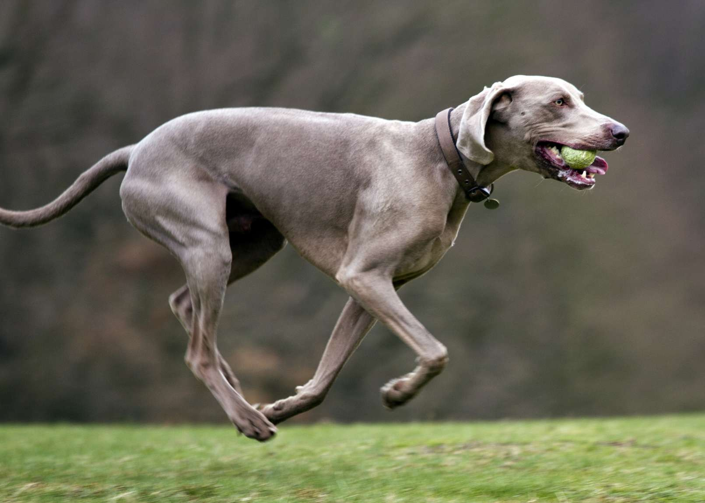

Salud
Corazón y músculos fuertes: El impacto del ejercicio cardiovascular
Al igual que en los humanos, el corazón de tu mascota es un músculo que necesita entrenamiento. Una rutina de actividad física regular no solo mejora la estética muscular, sino que es el pilar fundamental para un sistema cardiovascular eficiente y resistente a enfermedades.
1. Fortaleciendo el motor principal
El ejercicio aeróbico (caminar a buen ritmo, trotar, nadar) aumenta la frecuencia cardíaca de forma controlada. Con el tiempo, esto hace que el corazón bombee sangre de manera más eficiente, mejorando la circulación y la oxigenación de todos los tejidos.
Un sistema cardiovascular fuerte reduce el riesgo de hipertensión y ayuda a prevenir enfermedades cardíacas adquiridas en la vejez, especialmente en razas pequeñas propensas a problemas valvulares.
2. Músculo magro vs. Grasa
El sedentarismo provoca atrofia muscular (pérdida de masa). Los músculos fuertes actúan como una armadura para el esqueleto y son metabólicamente activos, lo que significa que queman más calorías incluso en reposo.
Una dieta rica en proteínas de calidad animal (como la fórmula Porte con pollo y carne magra) proporciona los "ladrillos" necesarios para construir este músculo, pero es el ejercicio el que coloca esos ladrillos en su lugar.
3. Adaptando la actividad a la edad
La intensidad debe variar según la etapa de vida:
- Cachorros: Evitar impactos fuertes o carreras largas hasta que sus placas de crecimiento cierren. El juego libre es lo mejor.
- Adultos: Pueden soportar ejercicios de resistencia (trekking, running) progresivos.
- Seniors: Mantener el movimiento es vital para evitar la rigidez, pero a un ritmo más lento y constante.